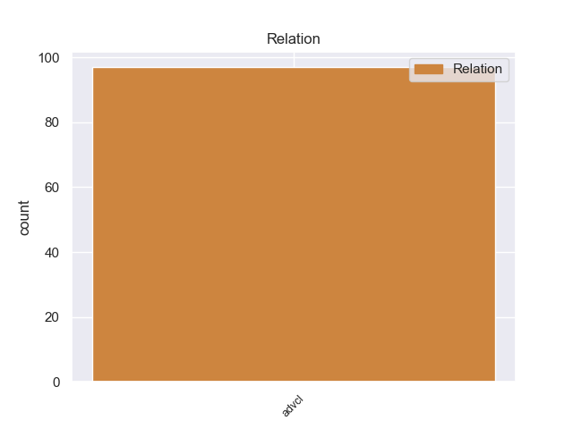
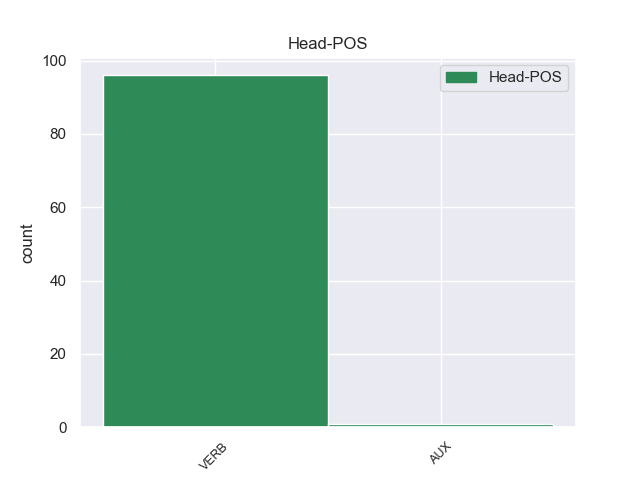
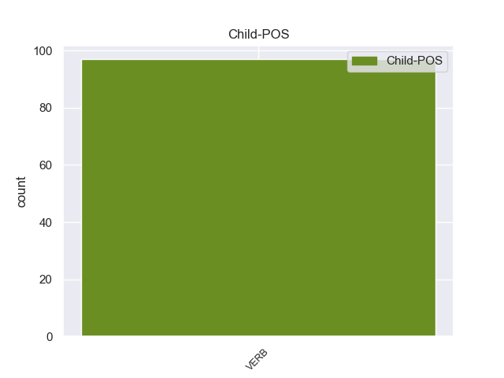

Distribution of features within this leaf



Agreement Rules sorted by frequency.
- When the dependent token is the adverbial clause modifier(advcl) of the head token,
1 Αν _ _ _ _ 0 _ _ _
2 οι _ _ _ _ 0 _ _ _
3 εταιρείες _ _ _ _ 0 _ _ _
4 συμμορφωθούν συμμορφωθο VERB _ Mood=Ind|Number=Plur|Person=3|Tense=Pres|VerbForm=Fin 10 advcl _ _
5 με _ _ _ _ 0 _ _ _
6 αυτό _ _ _ _ 0 _ _ _
7 , _ _ _ _ 0 _ _ _
8 πρέπει _ _ _ _ 0 _ _ _
9 να _ _ _ _ 0 _ _ _
10 έχουν tουr VERB _ Mood=Ind|Number=Plur|Person=3|Tense=Pres|VerbForm=Fin 0 _ _ _
11 το _ _ _ _ 0 _ _ _
12 δικαίωμα _ _ _ _ 0 _ _ _
13 να _ _ _ _ 0 _ _ _
14 υποβάλλουν _ _ _ _ 0 _ _ _
15 προσφορές _ _ _ _ 0 _ _ _
16 για _ _ _ _ 0 _ _ _
17 συμβάσεις _ _ _ _ 0 _ _ _
18 . _ _ _ _ 0 _ _ _
Disagree Examples:
1 Su _ _ _ _ 0 _ _ _
2 detención _ _ _ _ 0 _ _ _
3 ocurrió ocurrir VERB _ Mood=Ind|Number=Sing|Person=3|Tense=Past|VerbForm=Fin 0 _ _ _
4 alrededor _ _ _ _ 0 _ _ _
5 de _ _ _ _ 0 _ _ _
6 las _ _ _ _ 0 _ _ _
7 02:10 _ _ _ _ 0 _ _ _
8 horas _ _ _ _ 0 _ _ _
9 de _ _ _ _ 0 _ _ _
10 ayer _ _ _ _ 0 _ _ _
11 , _ _ _ _ 0 _ _ _
12 cuando _ _ _ _ 0 _ _ _
13 intentaba intentar VERB _ Mood=Ind|Number=Sing|Person=3|Tense=Imp|VerbForm=Fin 3 advcl _ _
14 escapar _ _ _ _ 0 _ _ _
15 en _ _ _ _ 0 _ _ _
16 el _ _ _ _ 0 _ _ _
17 taxi _ _ _ _ 0 _ _ _
18 que _ _ _ _ 0 _ _ _
19 acababa _ _ _ _ 0 _ _ _
20 de _ _ _ _ 0 _ _ _
21 robar _ _ _ _ 0 _ _ _
22 . _ _ _ _ 0 _ _ _
1 El _ _ _ _ 0 _ _ _
2 Getafe _ _ _ _ 0 _ _ _
3 quiere _ _ _ _ 0 _ _ _
4 fichar _ _ _ _ 0 _ _ _
5 a _ _ _ _ 0 _ _ _
6 un _ _ _ _ 0 _ _ _
7 crack _ _ _ _ 0 _ _ _
8 en _ _ _ _ 0 _ _ _
9 la _ _ _ _ 0 _ _ _
10 delantera _ _ _ _ 0 _ _ _
11 y _ _ _ _ 0 _ _ _
12 si _ _ _ _ 0 _ _ _
13 aparecían aparecer VERB _ Mood=Ind|Number=Plur|Person=3|Tense=Imp|VerbForm=Fin 0 _ _ _
14 no _ _ _ _ 0 _ _ _
15 hace hacer VERB _ Mood=Ind|Number=Sing|Person=3|Tense=Pres|VerbForm=Fin 13 advcl _ _
16 muchos _ _ _ _ 0 _ _ _
17 los _ _ _ _ 0 _ _ _
18 nombres _ _ _ _ 0 _ _ _
19 de _ _ _ _ 0 _ _ _
20 Morata _ _ _ _ 0 _ _ _
21 y _ _ _ _ 0 _ _ _
22 Dani _ _ _ _ 0 _ _ _
23 Güiza _ _ _ _ 0 _ _ _
24 ( _ _ _ _ 0 _ _ _
25 ver _ _ _ _ 0 _ _ _
26 artículo _ _ _ _ 0 _ _ _
27 ) _ _ _ _ 0 _ _ _
28 el _ _ _ _ 0 _ _ _
29 que _ _ _ _ 0 _ _ _
30 ahora _ _ _ _ 0 _ _ _
31 colocan _ _ _ _ 0 _ _ _
32 es _ _ _ _ 0 _ _ _
33 el _ _ _ _ 0 _ _ _
34 fichaje _ _ _ _ 0 _ _ _
35 de _ _ _ _ 0 _ _ _
36 Caicedo _ _ _ _ 0 _ _ _
37 . _ _ _ _ 0 _ _ _
1 Aunque _ _ _ _ 0 _ _ _
2 Stevenson _ _ _ _ 0 _ _ _
3 había _ _ _ _ 0 _ _ _
4 sido _ _ _ _ 0 _ _ _
5 el _ _ _ _ 0 _ _ _
6 candidato _ _ _ _ 0 _ _ _
7 presidencial _ _ _ _ 0 _ _ _
8 de _ _ _ _ 0 _ _ _
9 el _ _ _ _ 0 _ _ _
10 Partido _ _ _ _ 0 _ _ _
11 Demócrata _ _ _ _ 0 _ _ _
12 en _ _ _ _ 0 _ _ _
13 1952 _ _ _ _ 0 _ _ _
14 y _ _ _ _ 0 _ _ _
15 1956 _ _ _ _ 0 _ _ _
16 y _ _ _ _ 0 _ _ _
17 todavía _ _ _ _ 0 _ _ _
18 mantenía _ _ _ _ 0 _ _ _
19 un _ _ _ _ 0 _ _ _
20 público _ _ _ _ 0 _ _ _
21 fiel _ _ _ _ 0 _ _ _
22 de _ _ _ _ 0 _ _ _
23 liberales _ _ _ _ 0 _ _ _
24 e _ _ _ _ 0 _ _ _
25 intelectuales _ _ _ _ 0 _ _ _
26 , _ _ _ _ 0 _ _ _
27 sus _ _ _ _ 0 _ _ _
28 dos _ _ _ _ 0 _ _ _
29 aplastantes _ _ _ _ 0 _ _ _
30 derrotas _ _ _ _ 0 _ _ _
31 ante _ _ _ _ 0 _ _ _
32 el _ _ _ _ 0 _ _ _
33 republicano _ _ _ _ 0 _ _ _
34 Dwight _ _ _ _ 0 _ _ _
35 Eisenhower _ _ _ _ 0 _ _ _
36 llevó llevar VERB _ Mood=Ind|Number=Sing|Person=3|Tense=Past|VerbForm=Fin 0 _ _ _
37 a _ _ _ _ 0 _ _ _
38 los _ _ _ _ 0 _ _ _
39 jefes _ _ _ _ 0 _ _ _
40 de _ _ _ _ 0 _ _ _
41 el _ _ _ _ 0 _ _ _
42 partido _ _ _ _ 0 _ _ _
43 a _ _ _ _ 0 _ _ _
44 una _ _ _ _ 0 _ _ _
45 búsqueda _ _ _ _ 0 _ _ _
46 de _ _ _ _ 0 _ _ _
47 una _ _ _ _ 0 _ _ _
48 " _ _ _ _ 0 _ _ _
49 cara _ _ _ _ 0 _ _ _
50 fresca _ _ _ _ 0 _ _ _
51 " _ _ _ _ 0 _ _ _
52 que _ _ _ _ 0 _ _ _
53 había haber VERB _ Mood=Ind|Number=Sing|Person=3|Tense=Imp|VerbForm=Fin 36 advcl _ _
54 una _ _ _ _ 0 _ _ _
55 mejor _ _ _ _ 0 _ _ _
56 oportunidad _ _ _ _ 0 _ _ _
57 de _ _ _ _ 0 _ _ _
58 de _ _ _ _ 0 _ _ _
59 ganar _ _ _ _ 0 _ _ _
60 las _ _ _ _ 0 _ _ _
61 elecciones _ _ _ _ 0 _ _ _
62 generales _ _ _ _ 0 _ _ _
63 de _ _ _ _ 0 _ _ _
64 noviembre _ _ _ _ 0 _ _ _
65 . _ _ _ _ 0 _ _ _
1 Nunca _ _ _ _ 0 _ _ _
2 he _ _ _ _ 0 _ _ _
3 visto _ _ _ _ 0 _ _ _
4 un _ _ _ _ 0 _ _ _
5 spa _ _ _ _ 0 _ _ _
6 en _ _ _ _ 0 _ _ _
7 el _ _ _ _ 0 _ _ _
8 que _ _ _ _ 0 _ _ _
9 te _ _ _ _ 0 _ _ _
10 digan _ _ _ _ 0 _ _ _
11 que _ _ _ _ 0 _ _ _
12 por _ _ _ _ 0 _ _ _
13 narices _ _ _ _ 0 _ _ _
14 tienes _ _ _ _ 0 _ _ _
15 que _ _ _ _ 0 _ _ _
16 entrar _ _ _ _ 0 _ _ _
17 a _ _ _ _ 0 _ _ _
18 la _ _ _ _ 0 _ _ _
19 piscina _ _ _ _ 0 _ _ _
20 a _ _ _ _ 0 _ _ _
21 la _ _ _ _ 0 _ _ _
22 hora _ _ _ _ 0 _ _ _
23 que _ _ _ _ 0 _ _ _
24 a _ _ _ _ 0 _ _ _
25 ellos _ _ _ _ 0 _ _ _
26 les _ _ _ _ 0 _ _ _
27 de _ _ _ _ 0 _ _ _
28 la _ _ _ _ 0 _ _ _
29 gana _ _ _ _ 0 _ _ _
30 , _ _ _ _ 0 _ _ _
31 y _ _ _ _ 0 _ _ _
32 como _ _ _ _ 0 _ _ _
33 a _ _ _ _ 0 _ _ _
34 nosotros _ _ _ _ 0 _ _ _
35 no _ _ _ _ 0 _ _ _
36 nos _ _ _ _ 0 _ _ _
37 cuadraba cuadrar VERB _ Mood=Ind|Number=Sing|Person=3|Tense=Imp|VerbForm=Fin 41 advcl _ SpaceAfter=No
38 , _ _ _ _ 0 _ _ _
39 pues _ _ _ _ 0 _ _ _
40 nos _ _ _ _ 0 _ _ _
41 quedamos quedar VERB _ Mood=Sub|Number=Plur|Person=1|Tense=Pres|VerbForm=Fin 0 _ _ _
42 sin _ _ _ _ 0 _ _ _
43 disfrutar _ _ _ _ 0 _ _ _
44 de _ _ _ _ 0 _ _ _
45 el _ _ _ _ 0 _ _ _
46 spa _ _ _ _ 0 _ _ _
47 gracias _ _ _ _ 0 _ _ _
48 a _ _ _ _ 0 _ _ _
49 la _ _ _ _ 0 _ _ _
50 recepcionista _ _ _ _ 0 _ _ _
51 . _ _ _ _ 0 _ _ _
1 Philip _ _ _ _ 0 _ _ _
2 Pirrip _ _ _ _ 0 _ _ _
3 , _ _ _ _ 0 _ _ _
4 mejor _ _ _ _ 0 _ _ _
5 conocido _ _ _ _ 0 _ _ _
6 como _ _ _ _ 0 _ _ _
7 " _ _ _ _ 0 _ _ _
8 Pip _ _ _ _ 0 _ _ _
9 " _ _ _ _ 0 _ _ _
10 , _ _ _ _ 0 _ _ _
11 un _ _ _ _ 0 _ _ _
12 niño _ _ _ _ 0 _ _ _
13 que _ _ _ _ 0 _ _ _
14 vive _ _ _ _ 0 _ _ _
15 con _ _ _ _ 0 _ _ _
16 su _ _ _ _ 0 _ _ _
17 hermana _ _ _ _ 0 _ _ _
18 y _ _ _ _ 0 _ _ _
19 su _ _ _ _ 0 _ _ _
20 cuñado _ _ _ _ 0 _ _ _
21 después _ _ _ _ 0 _ _ _
22 de _ _ _ _ 0 _ _ _
23 la _ _ _ _ 0 _ _ _
24 muerte _ _ _ _ 0 _ _ _
25 de _ _ _ _ 0 _ _ _
26 sus _ _ _ _ 0 _ _ _
27 padres _ _ _ _ 0 _ _ _
28 , _ _ _ _ 0 _ _ _
29 conoce conocer VERB _ Mood=Ind|Number=Sing|Person=3|Tense=Pres|VerbForm=Fin 0 _ _ _
30 a _ _ _ _ 0 _ _ _
31 un _ _ _ _ 0 _ _ _
32 viejo _ _ _ _ 0 _ _ _
33 convicto _ _ _ _ 0 _ _ _
34 que _ _ _ _ 0 _ _ _
35 había _ _ _ _ 0 _ _ _
36 escapado _ _ _ _ 0 _ _ _
37 de _ _ _ _ 0 _ _ _
38 un _ _ _ _ 0 _ _ _
39 barco _ _ _ _ 0 _ _ _
40 - _ _ _ _ 0 _ _ _
41 prisión _ _ _ _ 0 _ _ _
42 mientras _ _ _ _ 0 _ _ _
43 visitaba visitar VERB _ Mood=Ind|Number=Sing|Person=3|Tense=Imp|VerbForm=Fin 29 advcl _ _
44 la _ _ _ _ 0 _ _ _
45 tumba _ _ _ _ 0 _ _ _
46 de _ _ _ _ 0 _ _ _
47 sus _ _ _ _ 0 _ _ _
48 progenitores _ _ _ _ 0 _ _ _
49 . _ _ _ _ 0 _ _ _